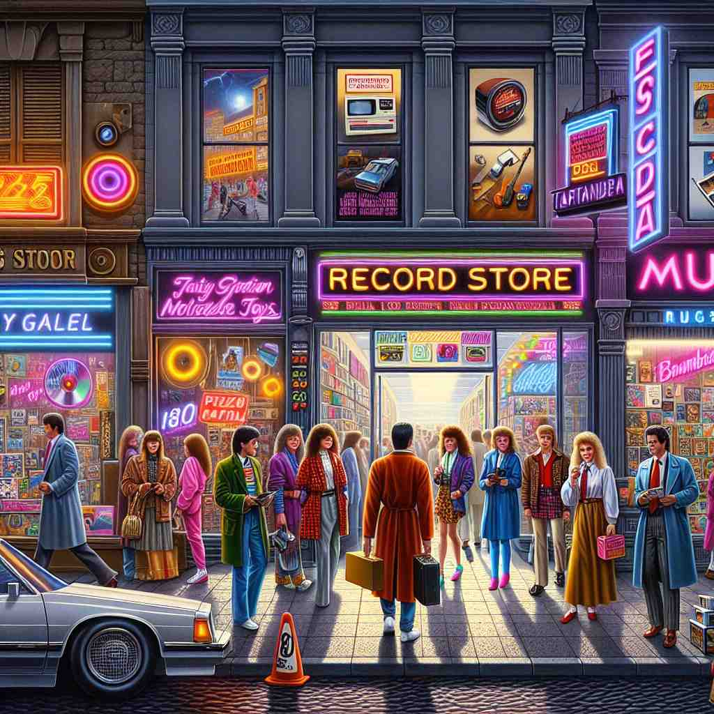
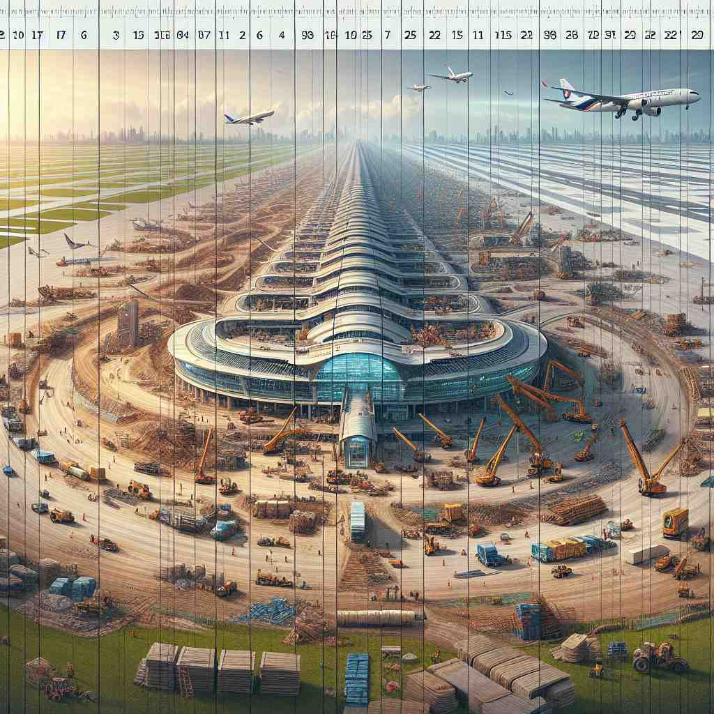
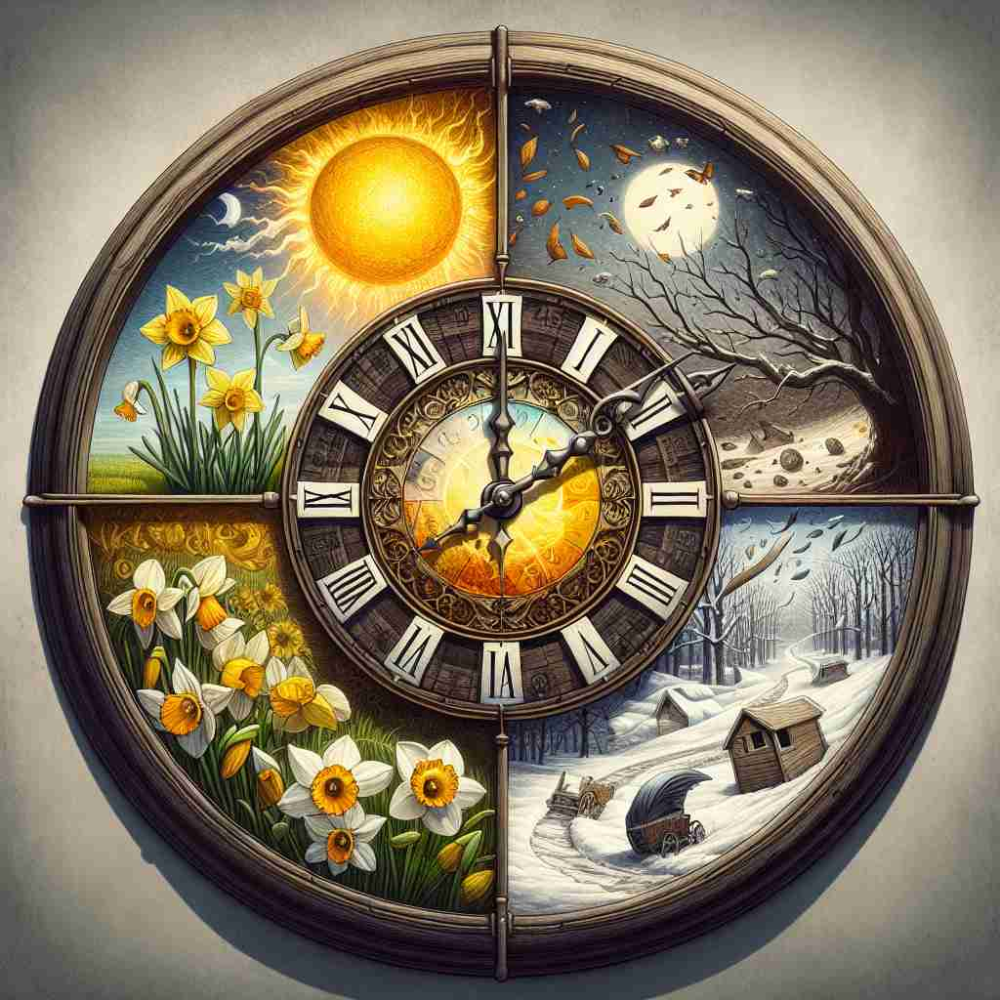

💬 The changes in the city over the last decade are impressive. 过去十年里城市的变化令人印象深刻。

💬 People often look back at a decade to remember great changes. 人们常常回首十年，以回忆那段伟大的变革。

💬 The airport was built over the last decade. 这座机场是在过去十年内建成的。

💬 Over the last decade of seasons, we have seen many changes in nature. 在过去十年的季节里，我们见证了自然的许多变化。
🧠 记住'decade'的关键是数字'十'。无论是十年、十个物品还是十天，都围绕着这个核心数字。想象一个由十个单位组成的时间线或物品集合，这将帮助你联想'decade'的各种用法。
🔈 ['dekeɪd][dɪ'keɪd]
🗝️ n. a period of ten years 十年期间
🎭 想象一个家庭聚会，大家围坐在一起，翻阅相簿。父亲指着一张十年前拍的照片，感慨道：'一转眼，这已经是十年前的事了。'这个场景展示了'decade'作为十年时间段的含义。
💬 She lived in Paris for a decade. 她在巴黎生活了十年。
🌳 单词 'decade' 由词根 'dec-'（十）和后缀 '-ade' 组成，表示一个十年的时间段。
🕸️ ['1. decimal: 十进制的', '2. decathlon: 十项全能', '3. decagon: 十边形']
💡 记忆 'decade' 时，可以联想 'dec-' 表示数字十，而 '-ade' 表示一种集合或组，合在一起就是'十'年一个组，即十年。